Material técnico de engenharia para o Instagram @eng.gustavomaia. Cada carrossel cobre um tema relevante para quem está construindo, reformando ou investindo em imóveis.
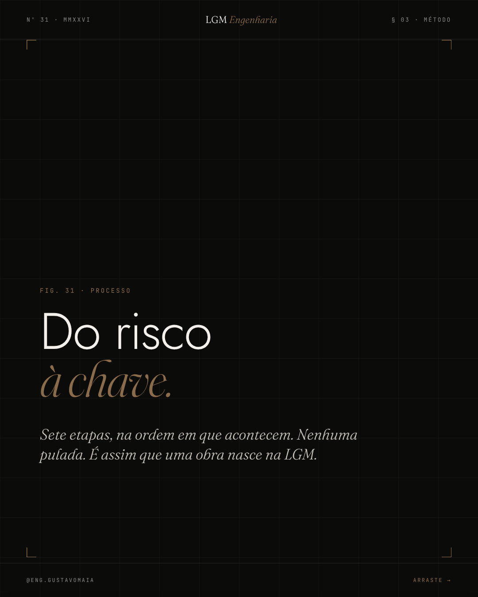
processos/31-do-risco-a-chave/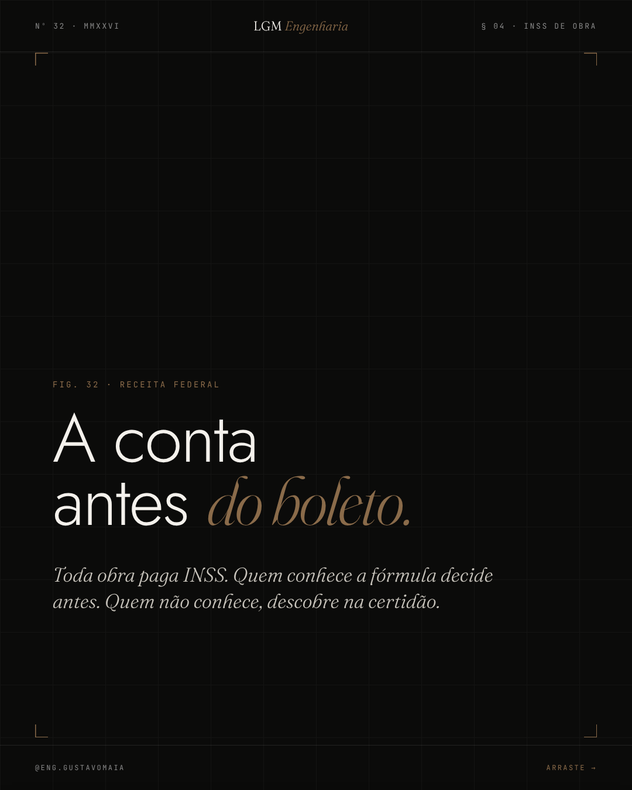
processos/32-a-conta-antes-do-boleto/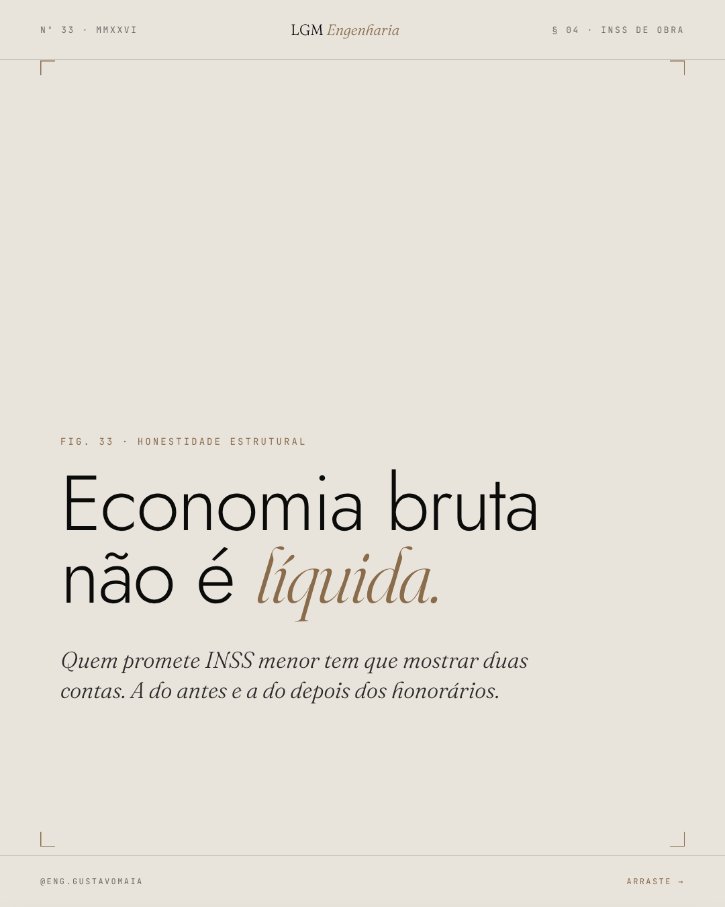
processos/33-bruta-nao-e-liquida/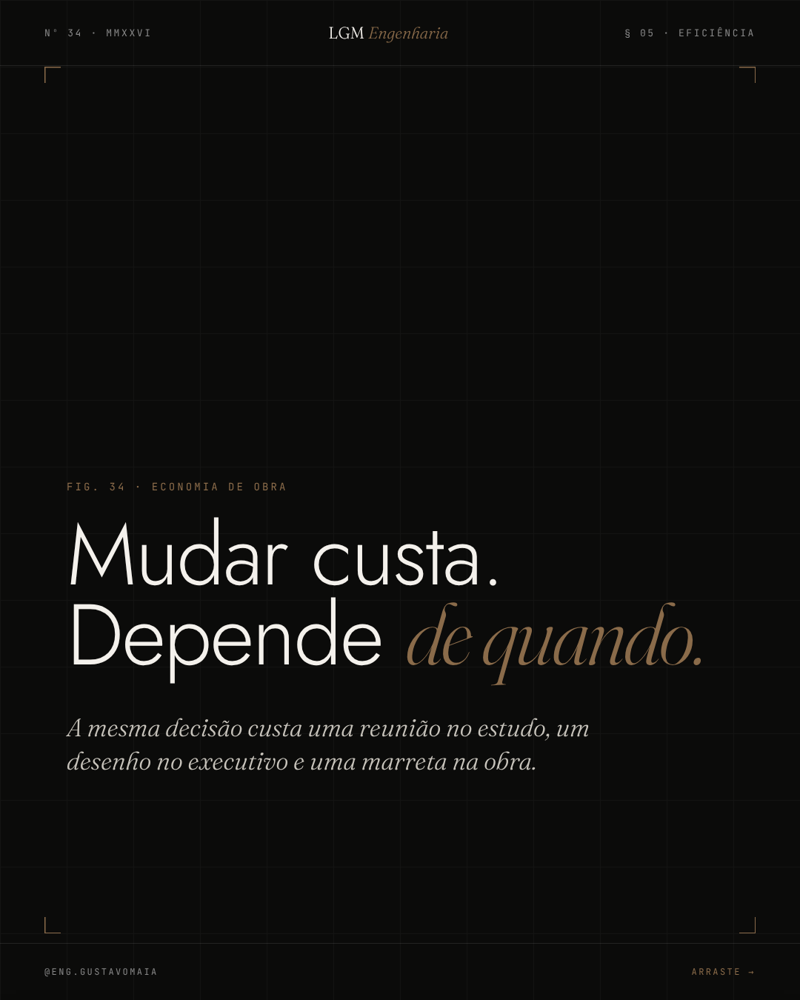
processos/34-o-custo-de-mudar/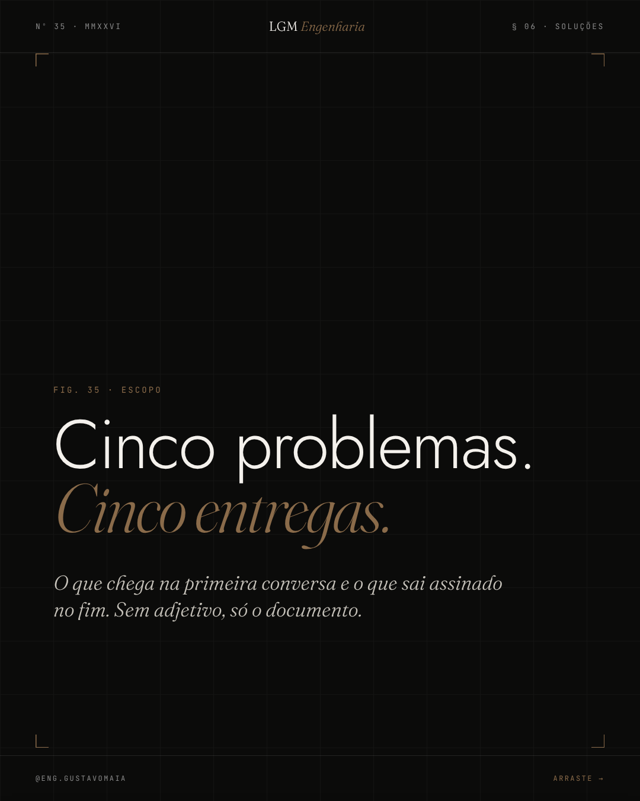
processos/35-o-que-resolvemos/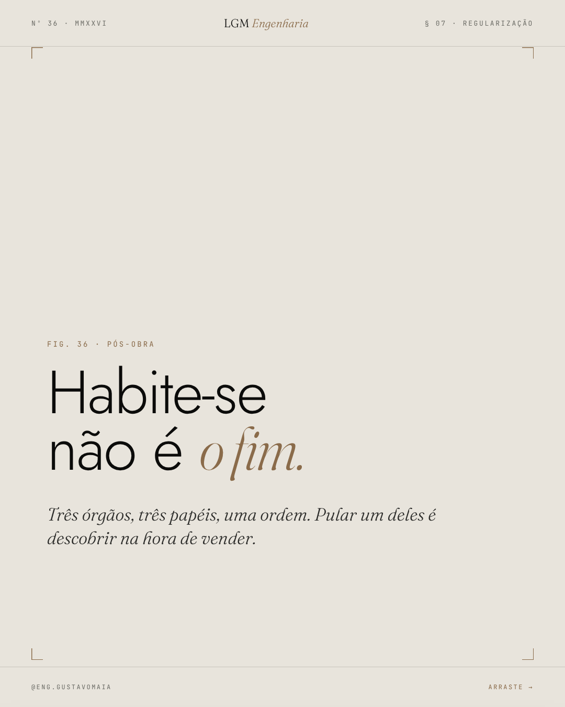
processos/36-tres-papeis/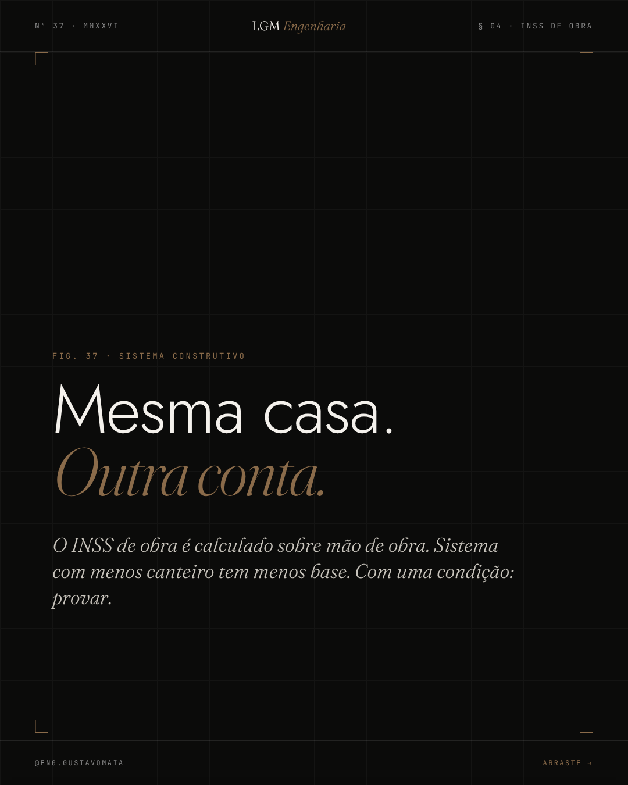
processos/37-o-sistema-muda-a-conta/Mesmo sistema do hub mkt-2026: papel, tinta, terra · wordmark LGM Engenharia · display sans + Fraunces itálico · numeração continua após o C30. Nenhum slide promete zerar INSS; exemplos marcados como hipotéticos. Legendas em processos/legendas.md.
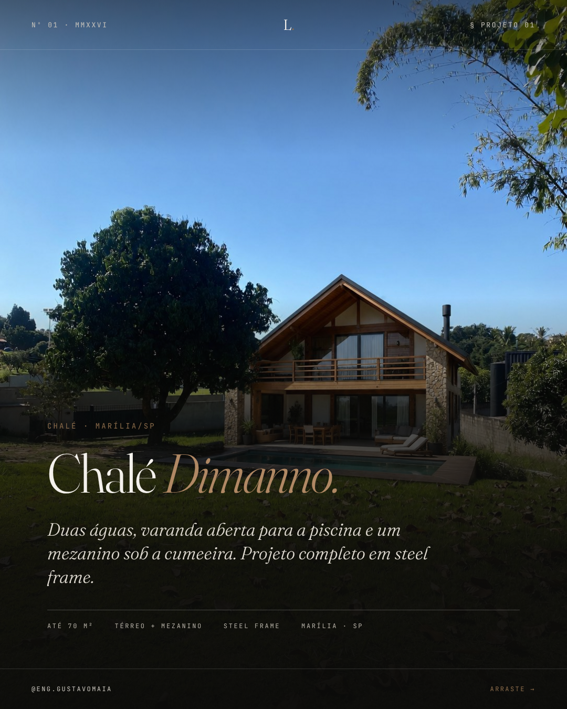
projetos/01-chale-dimanno/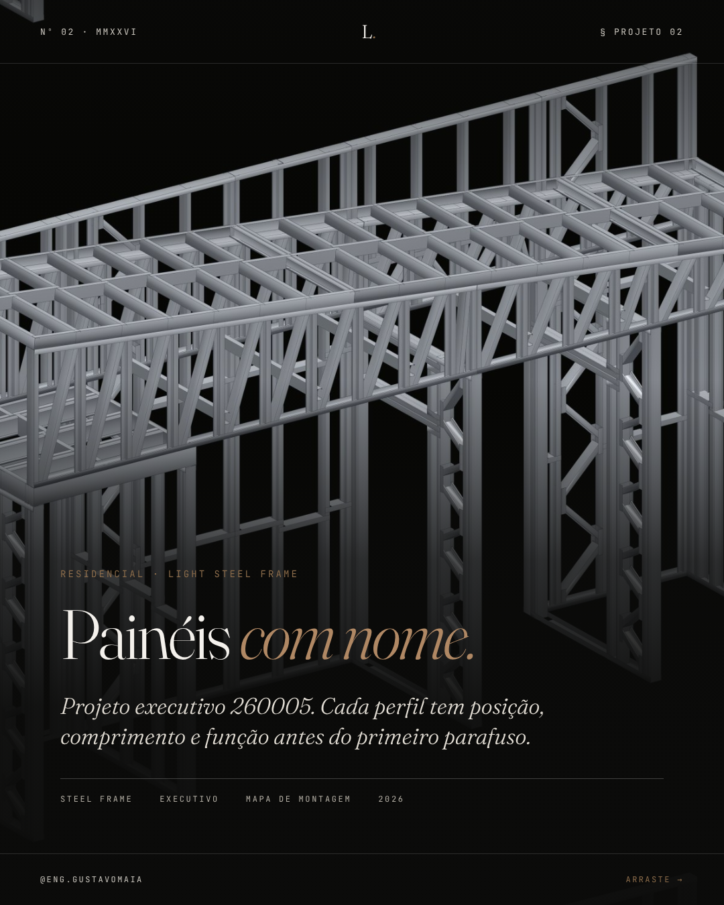
projetos/02-paineis-com-nome/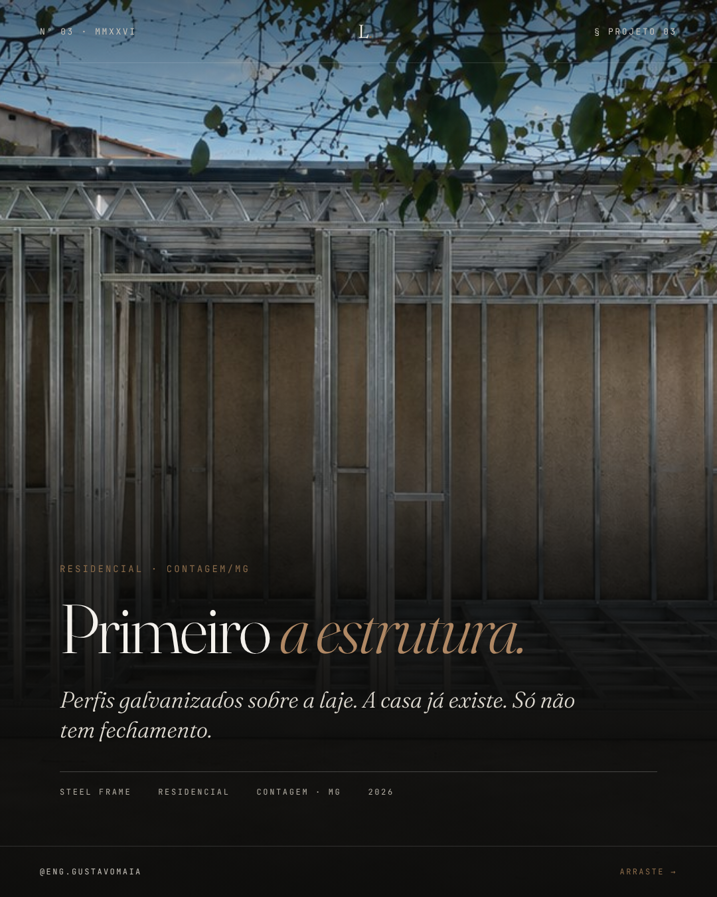
projetos/03-primeiro-a-estrutura/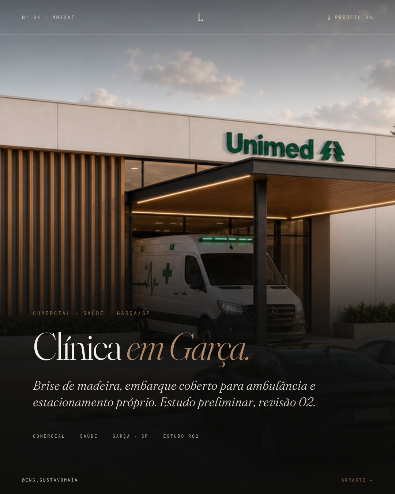
projetos/04-clinica-em-garca/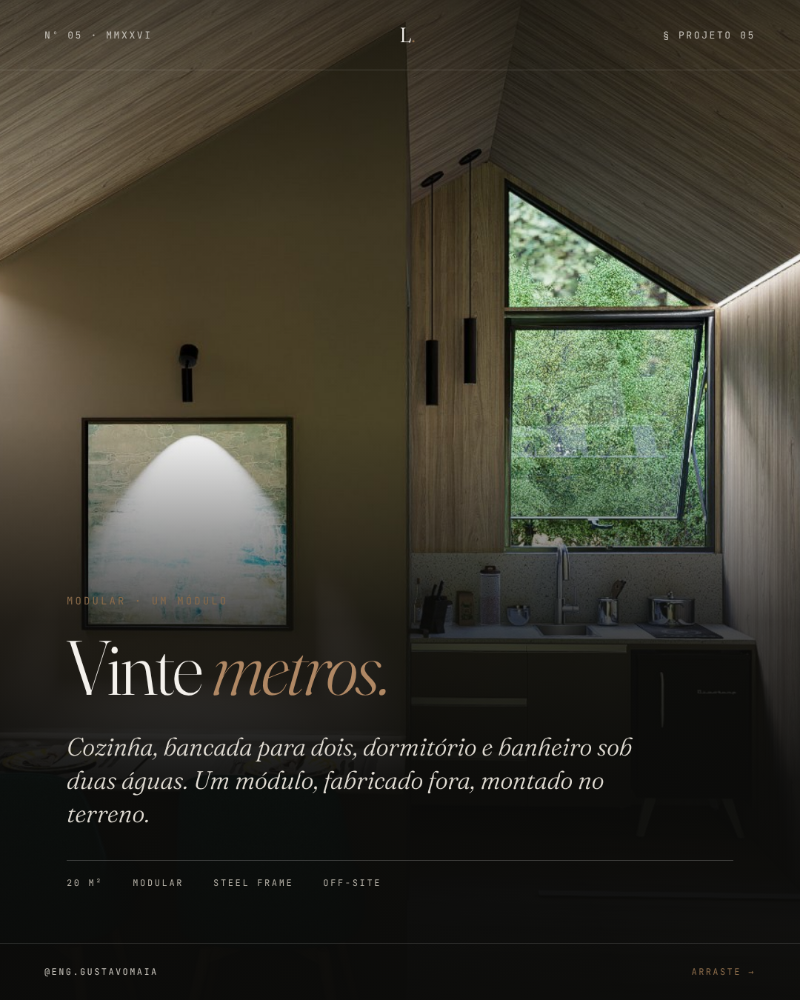
projetos/05-vinte-metros/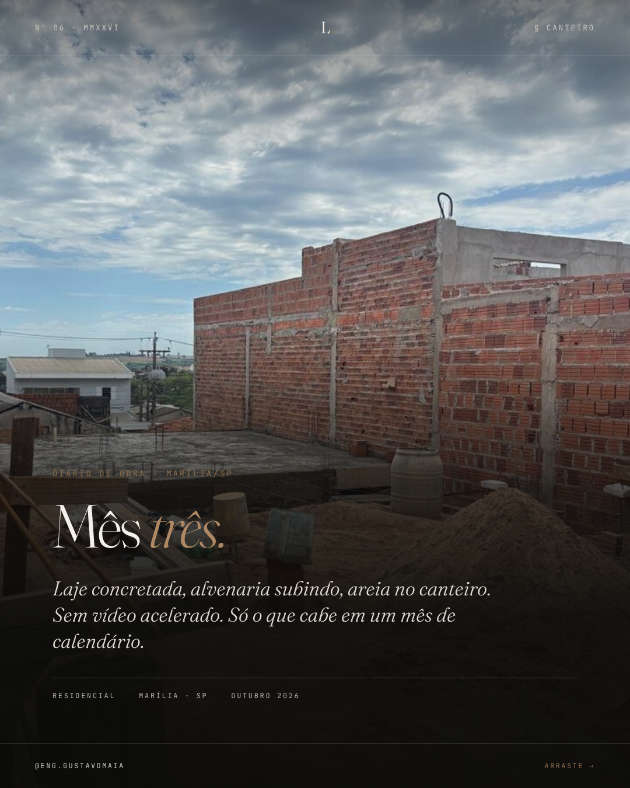
projetos/06-mes-tres/Identidade do hub mkt-2026: papel, tinta, terra · Fraunces, Inter, JetBrains Mono · masthead L. Legendas em projetos/legendas.md.